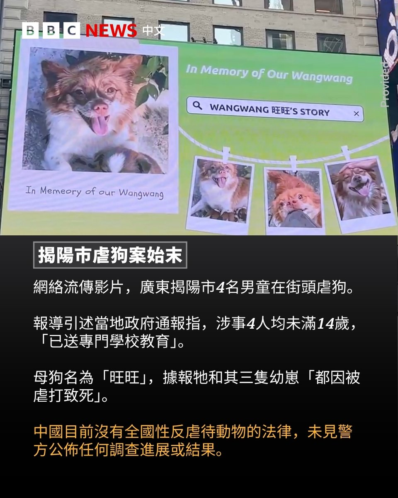
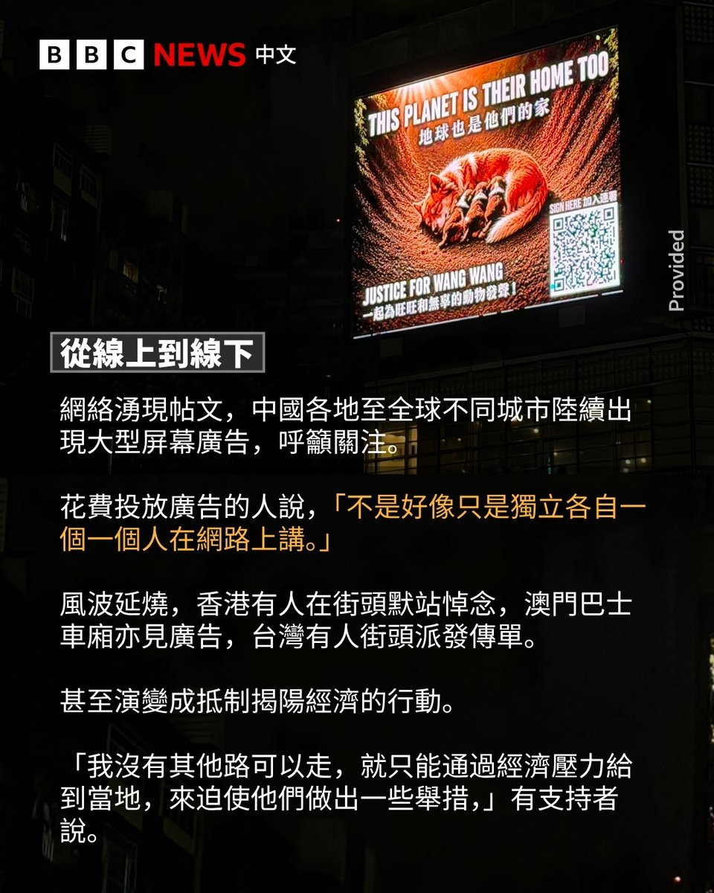
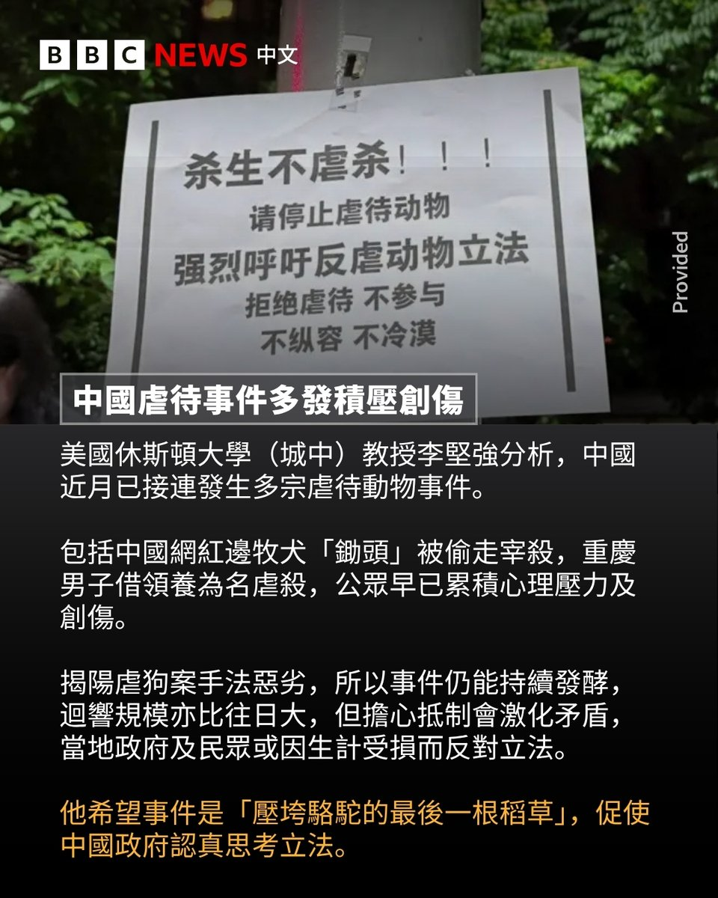

@bbcchinese 🤔





我一直有一个问题，有很多吃不起饭的人只要随便给点饭吃就千思万谢，但很多人却认为是他自己作的，不好好努力才吃不起饭的，可是为什么要怪责他人的苦难，你帮助不帮助都没事，还谴责人家不努力，这里面是有一些烂人但有苦难的人也很多 https://t.co/YpOUmXhlkv
中国广东揭阳四名男童在街头虐狗的影片引发众怒，狗妈妈“旺旺”被棍打点火焚烧，其幼犬遭戳击。
过去几周来，该事件引发的舆论不断发酵，不同的社交媒体涌现帖文转发消息，名人相继发声，反对虐待动物，呼吁制定全国性反虐待动物的法律。 https://t.co/7R7G0d2yrV
过去几周来，该事件引发的舆论不断发酵，不同的社交媒体涌现帖文转发消息，名人相继发声，反对虐待动物，呼吁制定全国性反虐待动物的法律。 https://t.co/7R7G0d2yrV